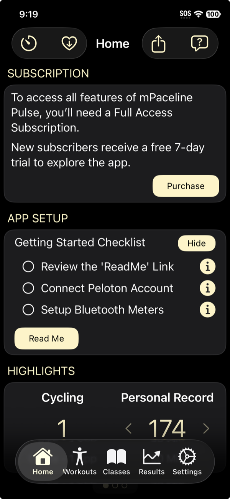

Getting Started
Welcome to mPaceline Pulse
After installing the app, your first launch will bring you to the Home screen. This is your starting point for setup, a quick preview of what the app can do, and (when you’re ready) activating full access.

Complete the App Setup checklist
On the Home screen you’ll see an App Setup panel with a short Getting Started Checklist. This is the fastest way to get up and running, and it’s best to complete the items in the order shown:
-
Review the ReadMe
-
Connect your Peloton account
-
Set up Bluetooth meters (optional)
Need help with any step?
Tap the small info button on the right side of any checklist item. Each one opens detailed instructions so you know exactly what to do.
Peloton Account details can be found here
Bluetooth Meters details can be found here
Feel free to explore the App
mPaceline Pulse includes a small amount of pre-populated sample data so you can preview screens, charts, and navigation. Some areas will be limited until a subscription is active, but you can still explore and see how things are organized.
About the sample workouts
The app includes three sample workouts to demonstrate features. You can delete these at any time — either before or after connecting your Peloton account.
Start a trial to unlock full access
To download your Peloton workouts and access all app features, you’ll need a Full Access Subscription. In the subscription panel at the top of the home page, tap the Purchase button. You will be walked through the purchase process.
Free 7-day trial for new users
New subscribers receive a free 7-day trial to explore the app and decide whether it fits their training needs. When you’re ready, tap Purchase on the Home screen to start your trial and unlock the full experience.
Next steps
Once you’ve completed the checklist and activated your subscription, your Peloton workouts can be downloaded and your stats, history, and insights will begin to build over time.
If you ever need help, look for the help icon at the top right corner of many of the pages in the App. Here you will find helpful advice on how to utilize the feature that you are currently viewing.